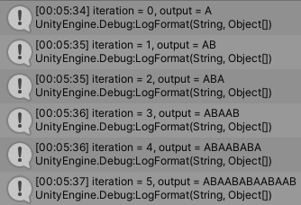
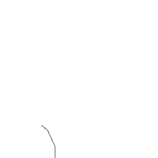

Lindenmayer System 簡稱為 L 系統是一種分形圖形學，根據給定的規則進行迭代過程，最終生成擁有特殊結構的圖形，被廣泛的應用在植物生長過程的研究上。
L 系統的主要的結構包含變數、常數、旋轉角度、初始狀態、迭代規則
變數：每次疊代過程中，根據迭代規則而改變的參數
常數：每次疊代過程中，不會改變的參數
旋轉角度：當方向旋轉時所旋轉的角度值
初始狀態：疊代次數為零時的初始輸出
迭代規則：每次疊代過程中，變數替換的規則
A：沿著方向畫一線段
B：沿著方向畫一線段
X：純標記
Y：純標記
[：紀錄當前位置、方向
]：取出上一位置、方向
+：方向順時針旋轉
-：方向逆時針旋轉
變數：A、B
初始狀態：A
迭代規則：
A -> AB
B -> A

Algae 輸出結果變數：A、B
常數：[、]、+、-
旋轉角度：45
初始狀態：B
迭代規則：
A -> A[-B]+B
B -> AA
Fractal Tree 輸出結果
變數：A、X
初始狀態：A
迭代規則：
A -> AXA
X -> XXX
Cantor Set 輸出結果
變數：A
常數：+、-
旋轉角度：90
初始狀態：A
迭代規則：
A -> A-A+A+A-A
Koch Curve 輸出結果
變數：A
常數：+、-
旋轉角度：60
初始狀態：A++A++A
迭代規則：
A -> A-A++A-A
Koch Snowflake 輸出結果
變數：A、B
常數：+、-
旋轉角度：120
初始狀態：A-B-B
迭代規則：
A -> A-B+A+B-A
B -> BB
Sierpinski Triangle 輸出結果
變數：X
常數：A、B、+、-
旋轉角度：45
初始狀態：A–XA–A–XA
迭代規則：
X -> XA+B+XA–A–XA+B+X
Sierpinski Curve 輸出結果
變數：X
常數：A、+、-
初始狀態：A-XA-A-XA
旋轉角度：90
迭代規則：
X -> XA+A-A+XA-A-XA+A-A+X
Sierpinski Square Curve 輸出結果
變數：A、B
常數：+、-
旋轉角度：60
初始狀態：A
迭代規則：
A -> B+A+B
B -> A-B-A
Sierpinski Arrowhead Curve 輸出結果
變量：X、Y
常數：A、+、-
初始狀態：AX
旋轉角度：90
迭代規則：
X -> X-YA-
Y -> +AX+Y
Dragon Curve 輸出結果
變量：X、A
常數：[、]、+、-
旋轉角度：25
初始狀態：X
迭代規則：
X -> A-[[X]+X]+A[+AX]-X
A -> AA
Fractal Plant 輸出結果

Fractal Plant 輸出結果Lindenmayer System 分形圖形學（完整原始碼）
L-system – Wikipedia
Koch snowflake – Wikipedia
Sierpiński curve – Wikipedia